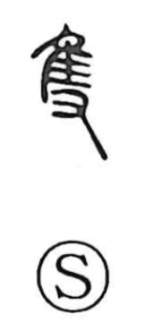

隻

Uncategorized
Kun: | On: seki
single ・ one of a pair ・ alone ・ counter for ships and birds
Explanation
Formed from the bird graph 隹 and the hand graph 又, 隻 depicts a bird held in the hand and thus means a single bird. The Shuowen glosses it as “one bird.” In oracle-bone inscriptions it often appears as a verb meaning “to catch,” in contexts such as catching an elephant or seizing a western Qiang captive. After a separate graph, 雙, was created to show two birds, 隻 took on the contrasting sense of one, single, and by extension alone, and it became a counter for individual items such as birds and ships.